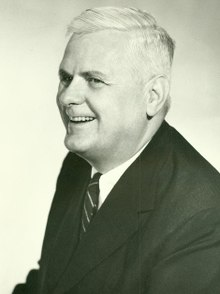
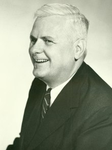
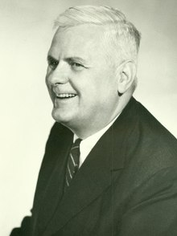
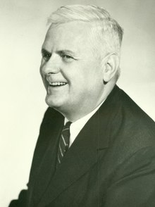

 
 Turing machines (TMs) are a model of computation first proposed by Alan Turing in 1936. Informally, a TM can be described as a set of states, input alphabet, tape alphabet, rules for transitioning between states, start state, accept state, and reject state. It uses an infinite tape as its unlimited memory and has a tape head that can read and write symbols and move left and right. The machine stores information by writing on the tape. To read the tape, the machine moves its head back over it. It can produce an output and enter accepting or rejecting states, or the machine can go on forever and never halt.
There are problems that are algorithmically unsolvable. This was formalized in 1936 by the Church-Turing thesis, which equates the intuitive notion of algorithms and Turing machine algorithms. More specifically, it states that any real-world computation can be translated into an equivalent computation by a Turing machine. We say that a function is computable if there exists an algorithm where given an input of the function domain, it returns the corresponding output. The unsolvability of certain problems can be surprising. On the next page, we discuss one such example: the busy beaver problem.